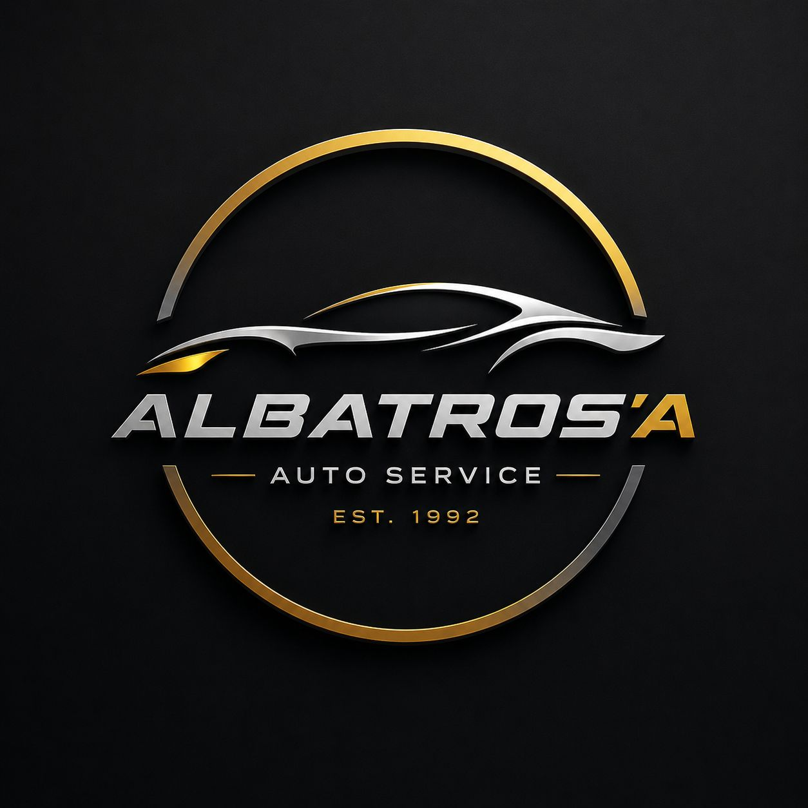
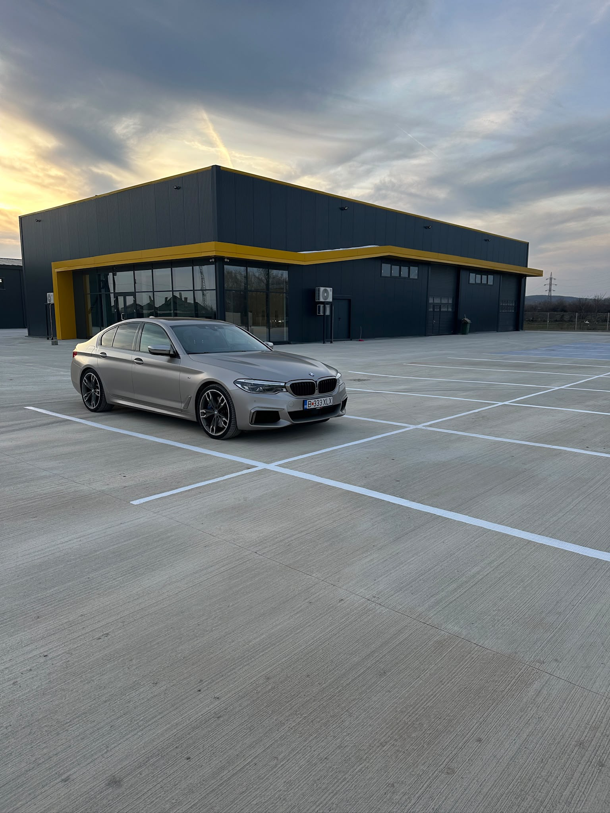
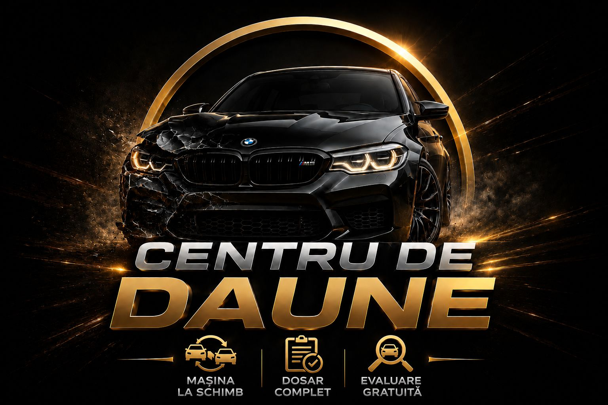

Revizii și consumabile
Schimburi de ulei și filtre, verificarea frânelor și întreținerea periodică a mașinii.

ALBATROSDe la întreținerea periodică la reparații mecanice și lucrări de caroserie, fiecare vizită începe cu înțelegerea problemei.

O revizie la timp, un zgomot neobișnuit sau un martor aprins în bord. Începem cu verificarea mașinii și stabilim lucrările necesare înainte de reparație.
Schimburi de ulei și filtre, verificarea frânelor și întreținerea periodică a mașinii.
Frâne, suspensie, direcție, ambreiaj și distribuție. Lucrări stabilite după verificarea tehnică.
Verificări pentru martori aprinși, funcționare neregulată, zgomote și probleme electrice.
Lucrări de caroserie, pregătire și vopsire, alături de reparații ale accesoriilor de caroserie.
Explicații clare despre ce trebuie făcut și comunicare pe parcursul lucrării.
Discutăm simptomele și verificăm starea mașinii.
Explicăm reparația propusă și oferta înainte de începere.
Efectuăm lucrările aprobate și verificările finale.

Contactează echipa dedicată pentru detalii despre dosarul de daună și reparația mașinii.
0787 434 406Bucov, Pleașa
Strada Fabricilor nr. 165C
Luni–vineri, 08:30–17:00.
Pentru lucrări de service sau daune RCA, alege numărul dedicat.